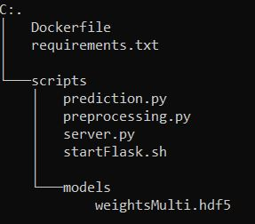

This document will walk you through the concepts/scripts necessary to deploy a trained CNN (as hdf5) as a http endpoint with Docker.
After obtaining a satisfying model, we save the weights and architecture in on hdf5 file that will be used for inference. The next step (MLOps) is to make this model available. To do this we create a Docker image for real time inference. The expected end result is a container, running on the Edge, infering in real time a specific type of failure for a machine (in our case a fan). There 3 steps to do this:
I will not cover this last step, as this is suited to the DevOps/IoT department. However I will detail on how to make integrating with that department seamless and fast.
For our docker image, we need 4 things. A Dockerfile to generate the backend to run the rest of our scripts, the model we trained (we won't go over that as we have done before), a flask server to retrieve requests and send responses and inference scripts to transform the input (in our case an audio recording) within a request into an output (information on whether the sound corresponds to normal functionning of the machine).
The inference scripts take care of several things. It first loads a given audio in its python environment and extracts the MelSpectrogram associated to it to pass to the model. This is encapsulated in our preprocessing.py file:
deploy/scripts/preprocessing.py
import librosa
import numpy as np
def extractFeatures(file_name):
try:
audio, sample_rate = librosa.load(file_name, res_type='kaiser_fast')
mfccs = librosa.feature.mfcc(y=audio, sr=sample_rate, n_mfcc=40)
pad_width = 2
mfccs = np.pad(mfccs, pad_width=((0, 0), (0, pad_width)), mode='constant')
# Clean-up if needed
# for var in ['audio','sample_rate','pad_width','file_name']:
# del globals()[var]
# del globals()['var']
except Exception as e:
print(e,"\n","Error encountered while parsing file: ", file_name)
return None
return mfccs
Once the MelSpectrogram is generated for a given .wav by calling the function we defined above, it reshapes the .wav to fit the first layer of our trained CNN. If the audio isn't exactly 10s0ms long, we control for that and either delete the few ms in excess or fill in the missing ms with the last ms of the audio. Taking the trained model as parameter, we predict the class probabilities for the given MelSpectrogram. We then check the highest probability among the 4 and create a string (message) corresponding to what the sound corresponds to. We also create a boolean to check if it's a failure or just normal functionning. All this information is wrapped in a dictionary 'response', that our service will return.
deploy/scripts/prediction.py
import numpy as np
from preprocessing import extractFeatures
def predict(wav, model):
mfccs = extractFeatures(wav)
if mfccs.shape[1] > 433:
mfccs = mfccs[:,:433]
elif mfccs.shape[1] < 433:
mfccs = np.concatenate((mfccs,mfccs[:,(mfccs.shape[1] - (433-mfccs.shape[1])):mfccs.shape[1]]), axis=1)
modelInput = mfccs.reshape(1, 40, 433, 1)
results = model.predict(modelInput)
predProbaList = [results[:,0][0],results[:,1][0],results[:,2][0],results[:,3][0]]
problem = np.argmax(results)
pred = False
if problem == 0:
detail = ['Component OK']
# pred1 = predProbaList[1] >= 0.7
if problem == 1:
detail = ['Component is imbalanced']
# pred2 = predProbaList[2] >= 0.7
if problem == 2:
detail = ['Component is clogged']
# pred3 = predProbaList[3] >= 0.7
if problem == 3:
detail = ['Voltage change']
if problem in [1,2,3]:
pred = True
response = {
"Anomaly":bool(pred),
"Details":{
"Message":detail[0],
"Probabilities":predProbaList
}
}
# for var in ['mfccs','model','wav','modelInput','results','predProbaList','problem','pred','detail']:
# del globals()[var]
# del globals()['var']
return response
The above scripts are what handle the Input to Output part of our service, going from a raw .wav file to precise information on it. These scripts, to be leveraged, need to be connected to an HTTP endpoint. Basically we need a way to call these scripts, in order to get from any .wav the info on whether it's a normal sound or not. To do that, we set up a flask server which will handle this for us.
deploy/scripts/server.py
import os
from flask import Flask, jsonify, request, Response
import json
from prediction import predict
import numpy as np
from keras.models import load_model
import gc
class MyEncoder(json.JSONEncoder):
def default(self, obj):
if isinstance(obj, np.integer):
return int(obj)
elif isinstance(obj, np.floating):
return float(obj)
elif isinstance(obj, np.ndarray):
return obj.tolist()
else:
return super(MyEncoder, self).default(obj)
def flask_app():
app = Flask(__name__)
model = load_model('models/weightsMulti.hdf5')
@app.route('/', methods=['GET'])
def server_is_up():
# print("success")
return 'server is up'
@app.route('/inference', methods=['POST'])
def start():
file = request.files['file']
pred = predict(file, model)
return Response(json.dumps(pred, cls=MyEncoder), mimetype="application/json")
# return jsonify({"prediction:":pred})
gc.collect()
return app
if __name__ == '__main__':
app = flask_app()
app.run(debug=True, host='0.0.0.0')
Here we simply start by loading the model into our environment and define two simple routes. A first just to check if the server is running and a second '/inference' which will call the model etc. In this second route, it starts by retrieving an audio file from a given request using the part key 'file'. It then calls the predict function from our prediction.py script (which will also call our extractFeatures function from our preprocessing.py script) which will handle the whole Input to Output pipeline on the .wav we retrieved from the request. Once the pipeline is executed, we simply send as a JSON response the information we built in our prediction.py script. There is also a custom encoder for JSON above our server, to ensure the object types of our responses. It is set to listen on 0.0.0.0 so localhost or 0.0.0.0 and by default on port 5000.
With all the above code, we are able to run a flask server with our inference pipeline locally provided we have the adequate Python environment. However, the goal here is to deploy this to the Edge (or another platform) so to do this we use Docker to encapsulate it all.
Our Dockerfile uses a python-slim image (for size optimization purposes), which has Python built-in as well as a series of Linux/C/C++ libraries already installed. We add one library for image processing purposes (libsndfile1) and pip install the required packages for the execution of our model (tf, keras, etc.). We also clear out caches and other unnecessary files. We then set the entrypoint to a shell script (startFlask.sh which is just: python3 server.py) which simply launches our flask server with python to listen to requests and send responses. We also expose on port 5000 to ensure where Docker is "listening"/"talking".
deploy/Dockerfile
FROM python:3.8-slim as base
FROM base as builder
RUN mkdir /install
WORKDIR /install
COPY requirements.txt /requirements.txt
RUN pip install --prefix=/install -r /requirements.txt && \
rm -r /root/.cache && \
rm -rf /src
FROM base
COPY --from=builder /install /usr/local
COPY scripts /app
RUN apt-get update -y && \
apt-get -y install libsndfile1
WORKDIR /app
EXPOSE 5000
CMD ["python3" ,"server.py"]
In the end, our local directory for building our image should resemble this:

To exectue build we simply do: docker build -t <name>:<version> .
Once your build is done, you can run a container of your image like so: Docker run --name=test -p 5010:5000 <name>:<version>
A container will thus be running at http://localhost:5010/ (due to port mapping with -p). You can interact with in to way:
this will print 'server is up'
curl http://localhost:5010/
this will send filename.wav to the server and return the detailed response of the model
curl -X POST -F "file=@filename.wav" http://localhost:5010/inference
The above is to test locally, however we wish to deploy this to any platform (or an Edge runtime in our case). To do this, we need to push our image (once we deem it adequate) to a container registry (ACR in our case). To do this, ensure you have created an ACR on your azure portal. Also make sure you have enabled admin user in the access keys menu in Settings to get credentials. Retrieve the login server, username and password to login:
Docker login acrname.azurecr.ioOnce you are succesfully logged, you need to tag your image with the adress of your ACR:
Docker tag <name>:<version> acrname.azurecr.io/<name>:<version>
Then simply push with the following command:
Docker push acrname.azurecr.io/<name>:<version>
Once the push is finished (can take a while depending on your bandwidth and size of image), you should see it in the repositories menu in Services in your ACR.
To check that it works, click on the 3 dots next to the version of your repository and click 'run instance'. This will create an Azure Container Instance of your image. Fill in a name and configure the port to 5000 for example. After the deployment is done, go the resource and in the overview you should have the IP of your instance. To interact with it, use the same curl instructions as above but replacing localhost with the IP of your instance and set the port to 5000. This should ensure it would work on any platform.